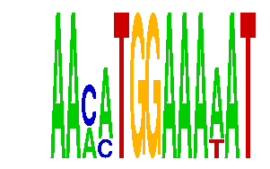

family_16 |
|---|
|  |
| Download PWM |
| Download instances (motifs) |
| Show motif distribution |
Query_ID | Query_Consensus | Subject_Name | Source_DB | Subject_ID | Length | Orientation | Offset | Divergence | Overlap | Subject_Consensus |
|---|---|---|---|---|---|---|---|---|---|---|
| family_16 | AACATGGAAAAAT | TGGAAA | JASPAR | PF0055 | 6 | as given | 4 | 0.072 | 6 | TGGAAA |
| family_16 | AACATGGAAAAAT | NFATC2 | JASPAR | MA0152.1 | 7 | reverse-complement | 4 | 0.384 | 7 | TTTTCCA |
| family_16 | AACATGGAAAAAT | YKACATTT | JASPAR | PF0145 | 8 | reverse-complement | 9 | 0.751 | 4 | TTACATTT |
Sequence | Start_position (from start) | Start_position (from end) | Average conservation | Best conservation score | Instance_with_best_CS | Best_Z-score | Instance_with_best_ZS | Strand |
|---|---|---|---|---|---|---|---|---|
| chr3:95845900-95847254 | 989 | 1002 | 0.0117692 | 0.043 | AAMATGGAAAWAT | 13.937964 | AAMATGGAAAWAT | 1 |
| chr16:50877500-50878600 | 266 | 279 | 0.0119231 | 0.018 | AAMATGGAAAWAT | 13.937964 | AAMMTGGAAAAAT | 1 |
| chr19:37911400-37913700 | 1905 | 1918 | 0.00238462 | 0.013 | AAMATGGAAAWAT | 13.937964 | AAMMTGGAAAAAT | 1 |
| chr10:116352034-116353034 | 738 | 751 | 0.119769 | 0.298 | AAMMTGGAAAAAT | 13.937964 | AAMATGGAAAWAT | 1 |
| chr15:90774100-90775800 | 650 | 663 | 0.000692308 | 0.004 | AAMMTGGAAAAAT | 13.937964 | AAMATGGAAAWAT | 1 |
| chr11:84103500-84105000 | 336 | 349 | 0.760231 | 1 | AAMMTGGAAAAAT | 13.937964 | AAMATGGAAAWAT | 1 |
| chr4:97809100-97810700 | 390 | 403 | 0.00784615 | 0.03 | AAMMTGGAAAAAT | 13.937964 | AAMMTGGAAAAAT | 1 |
| chrX:163621030-163622030 | 157 | 170 | 0.00976923 | 0.027 | AAMATGGAAAWAT | 13.937964 | AAMATGGAAAWAT | 1 |
| chr13:105435623-105437000 | 77 | 90 | 0.0335385 | 0.068 | AAMMTGGAAAAAT | 13.937964 | AAMATGGAAAWAT | 1 |
| chr8:64159100-64162100 | 2001 | 2014 | 0.0110769 | 0.021 | AAMATGGAAAWAT | 13.937964 | AAMMTGGAAAAAT | 1 |
| chr6:17126621-17128376 | 1537 | 1550 | 0.00776923 | 0.019 | AAMMTGGAAAAAT | 13.937964 | AAMMTGGAAAAAT | 1 |
| chr9:67436000-67438500 | 1281 | 1294 | 0.00430769 | 0.012 | AAMATGGAAAWAT | 13.937964 | AAMATGGAAAWAT | 1 |
| chr16:52178500-52180676 | 1644 | 1657 | 0.000384615 | 0.002 | AAMMTGGAAAAAT | 13.937964 | AAMMTGGAAAAAT | 1 |
| chr13:103659800-103661129 | 626 | 639 | 0.0106923 | 0.022 | AAMMTGGAAAAAT | 13.937964 | AAMATGGAAAWAT | 1 |